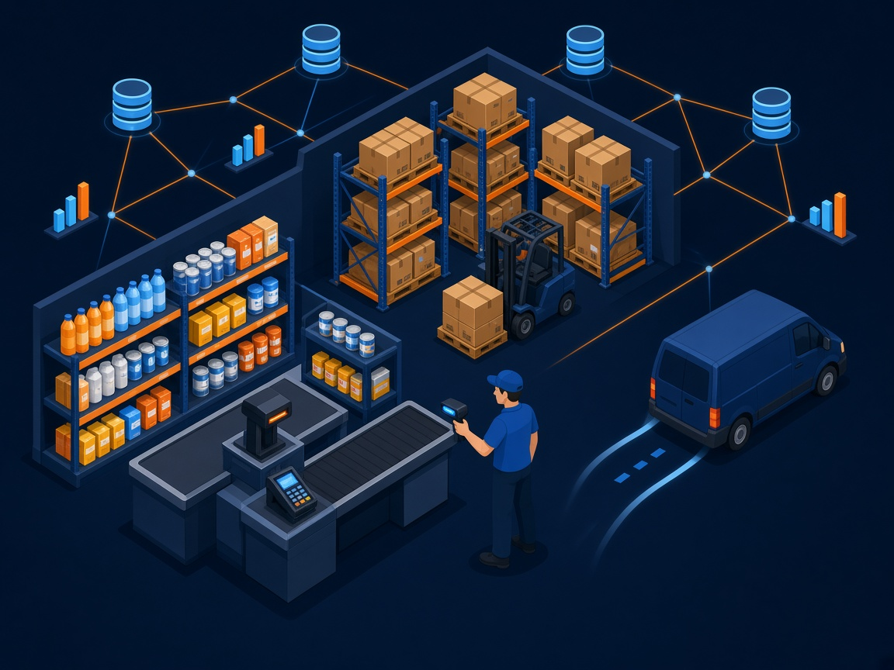
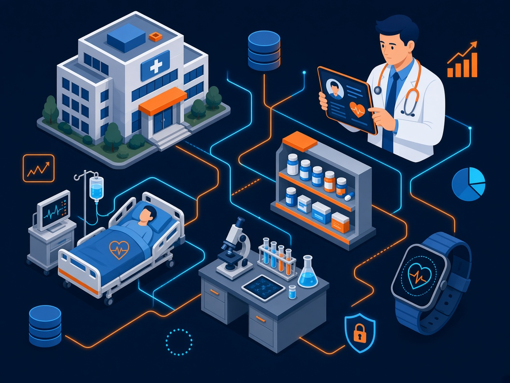
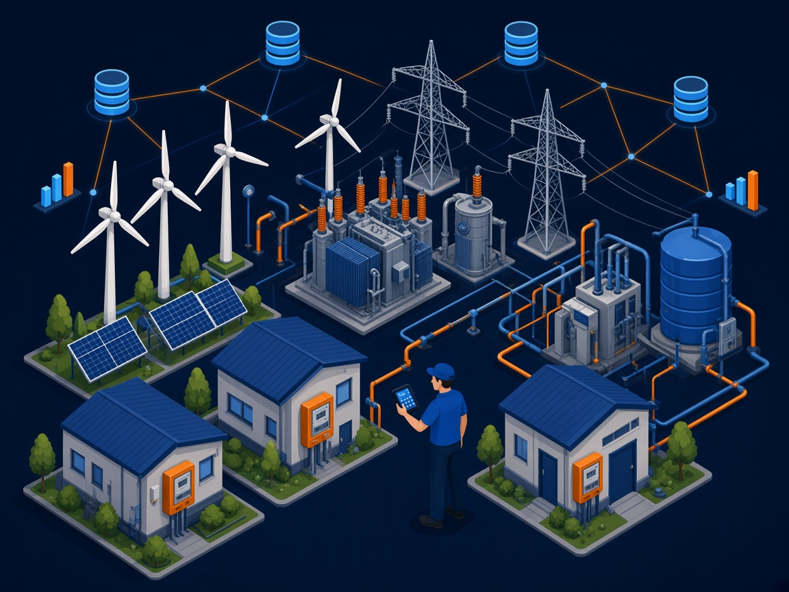
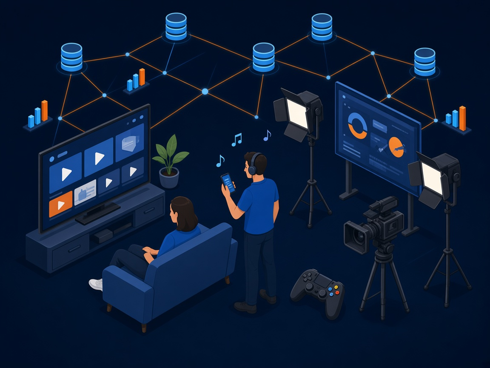

weeks (about 4 months)
live sessions, Mon-Sat
sections, about 215 topics
industry projects
| Weeks | Phase | Topics |
|---|---|---|
| 1-3 | Foundations | DE fundamentals, SQL, Python, S3, IAM |
| 4-6 | Core AWS DE | Glue, Athena, Redshift, Lake Formation, Lambda |
| 7-9 | Databases, streaming, big data | RDS, DynamoDB, Kinesis, SQS, EMR, OpenSearch, CI/CD |
| 10-12 | Operations, PySpark, Databricks | Monitoring and governance, PySpark (basic to advanced), EMR, Databricks, Delta Lake |
| 13-15 | GenAI for data engineering | Bedrock, embeddings, vector DBs, RAG, LLM-enriched pipelines, AI agents, AI governance |
| 16-17 | Industry projects | 4 end-to-end projects, demos, resume and interview preparation |
Every industry runs on data, but the business areas differ. The data engineer's job is the same everywhere:
For each industry we will look at:
| Team model | How it works | Common in |
|---|---|---|
| Centralised | One data platform team serves the whole company (often under the CTO or Chief Data Officer) | Mid-size companies, banks |
| Embedded (hub and spoke) | A central platform team plus data engineers inside business domains (supply chain, marketing) | Large retailers, e-commerce |
| Data mesh | Each domain owns its data products; a central team provides the platform and rules | Large enterprises, tech companies |

Supermarkets, fashion, electronics, and e-commerce: sell products through stores and online, and keep shelves stocked.
| Business area | Data engineering work |
|---|---|
| Transactions | Ingest POS bills from 1,000 stores (nightly batch + near real-time), deduplicate, load daily sales facts |
| Inventory | Build a daily stock snapshot per store/SKU; reconcile stock vs sales; stock-out alerts |
| Shipping | Track shipment events from logistics partners; on-time delivery metrics |
| Workforce | Join HR rosters with store footfall and sales for staffing dashboards |
| Maintenance | Stream fridge temperature readings; alert before stock spoils |
| Customers | Customer 360: merge loyalty, online, and store data; features for demand forecasting and recommendations |
Central data platform team, often with embedded DEs in supply chain and e-commerce squads. Works with merchandisers, store operations, BI analysts, and forecasting data scientists.
Demand forecasting, product recommendations, auto-generated product descriptions, review summarisation.

Hospitals, clinics, diagnostics labs, pharmacies, and insurers: treat patients and manage their care and costs.
| Business area | Data engineering work |
|---|---|
| Patient records | Integrate EHR data using healthcare standards (HL7, FHIR); build a single patient timeline across departments |
| Privacy | De-identify or mask patient data (PHI); column-level access; audit every access |
| Clinical data | Stream ICU vitals for early-warning alerts; load lab results for doctors and researchers |
| Beds and staff | Real-time bed occupancy and emergency wait-time dashboards |
| Claims | Claims pipeline with validation rules; rejection analysis; fraud signals |
| Research | Curated, consented datasets for clinical trials and outcome studies |
Health informatics or data platform team, working closely with compliance and security. Works with clinicians, hospital operations, actuaries, and researchers.
Clinical note summarisation, medical coding automation, RAG assistants over treatment guidelines, readmission risk models.
Airlines, travel agencies (OTAs), hotels, restaurants, ride-hailing, logistics, food delivery, and public transport: move people and goods, and look after guests.
| Business area | Data engineering work |
|---|---|
| Search and bookings | Ingest search clickstream; unify bookings from the website, app, and many OTAs; search-to-booking funnels |
| Pricing and revenue | Feed demand, competitor prices, and availability to pricing models; daily occupancy, ADR, and RevPAR |
| Fleet and shipments | Stream millions of GPS pings and scan events; live tracking and SLA breach alerts |
| Operations | Real-time delay feeds trigger rebooking and customer alerts; live room status for housekeeping |
| Drivers and staff | Daily payout calculations with an audit trail; utilisation dashboards |
| Guests and reviews | Guest 360 across properties and channels; collect reviews for sentiment and topic tagging |
Data platform team with a strong real-time (streaming) group, often with DEs embedded in revenue management. Works with pricing analysts, operations control rooms, hotel managers, and the customer app team.
Conversational trip planner, fare and ETA prediction, route optimisation, review responses, disruption assistants. (Our Project 3 is food delivery.)
Banks, NBFCs, payment apps, insurers, and brokers: hold money, lend it, move it, and manage risk, under strict regulation.
| Business area | Data engineering work |
|---|---|
| Payments and fraud | Stream card and UPI transactions to fraud models within milliseconds; block or flag in real time |
| Core banking | CDC from the core banking database to the lake; daily general-ledger reconciliation |
| Regulatory reporting | Accurate, auditable reports with full lineage ("where did this number come from?") |
| KYC | Pipelines that extract and validate data from identity documents |
| Credit risk | Customer history with SCD Type 2; features for credit scoring models |
| Security | Encryption, tokenisation of card numbers, fine-grained access, audit logs |
Enterprise data office or data platform team, in a highly governed setup. Works with risk, finance, compliance, fraud operations, and auditors.
Fraud detection, KYC document extraction, RAG assistants over regulations and policies, call summarisation.
Automotive, electronics, pharma, FMCG, and steel: turn raw materials into products efficiently, safely, and at consistent quality.
| Business area | Data engineering work |
|---|---|
| Machine sensors | Ingest high-frequency sensor data from the plant floor to the cloud; downsample and store as time series |
| Production | Compute OEE (availability x performance x quality) per line and shift |
| Maintenance | Sensor + work-order features for predictive maintenance models |
| Quality | Traceability: link each defect to batch, machine, operator, and supplier lot |
| Supply chain | Extract ERP (SAP) data; raw material coverage and supplier delivery reports |
| Energy | Energy per unit produced, by line, for cost and sustainability reporting |
Digital manufacturing / Industry 4.0 team, bridging plant engineering (OT) and IT. Works with plant managers, reliability engineers, quality, and supply chain planners.
Anomaly detection on sensors, visual defect detection, RAG assistant over machine manuals for technicians, demand planning.
Mobile operators, broadband and fibre providers, and DTH: connect people and devices, and bill them for usage.
| Business area | Data engineering work |
|---|---|
| CDRs | Ingest billions of usage records per day; aggregate usage per subscriber, region, and hour |
| Network | Stream tower and network metrics; outage and congestion alerts for the network operations centre |
| Billing | Rate usage against plans; reconcile billing with usage; revenue assurance reports |
| Subscribers | Subscriber 360 with SCD history of plans; churn prediction features |
| Fraud | Near real-time pattern detection on call records for SIM-box and spam fraud |
| Privacy | Mask phone numbers and location; consent-based access for marketing |
Big data / analytics platform team under the CIO or CTO. Works with network engineering, revenue assurance, marketing, and customer care.
Churn prediction, network fault prediction, personalised plan offers, customer care chatbots and call summarisation.

Power generation and distribution, renewables, oil and gas, water, and city gas: produce and deliver energy and water reliably to homes and industry.
| Business area | Data engineering work |
|---|---|
| Smart meters | Ingest millions of meter readings; handle late and missing readings; daily consumption per customer |
| Grid operations | Stream grid sensor data; outage detection and restoration-time dashboards |
| Generation | Join plant output with weather data for solar and wind forecasting |
| Maintenance | Sensor and inspection features for predictive maintenance of transformers and turbines |
| Losses | Compare supplied vs billed energy by area to find theft and leakage |
| Billing | Tariff-based billing pipelines; collection and arrears reports |
Digital / analytics team bridging operational technology (grid, plants) and IT. Works with grid operators, asset engineers, energy traders, and finance.
Demand and renewable forecasting, anomaly detection for theft, predictive maintenance, assistants over safety procedures.

Video and music streaming, TV broadcasters, news, gaming, and digital advertising: create content, keep audiences engaged, and earn from subscriptions and ads.
| Business area | Data engineering work |
|---|---|
| Viewing events | Stream billions of player events; watch-time and streaming-quality metrics per title and region |
| Recommendations | Build user and content features; feed recommendation models daily and in real time |
| Subscriptions | Subscriber lifecycle tables; churn and retention cohorts |
| Advertising | Join ad impressions with clicks and conversions; campaign revenue reporting |
| Royalties | Accurate per-play payout calculations for artists and studios, with an audit trail |
| Content catalogue | Clean title metadata and licence windows from many content partners |
Data platform team, often in a data mesh with domain teams for content, ads, and growth. Works with product managers, content strategists, ad sales, and recommendation data scientists.
Personalised recommendations, automatic subtitles and dubbing, content tagging, trailer and thumbnail generation.
| Industry | Batch example | Streaming example | Sensitive data |
|---|---|---|---|
| Retail | Daily sales and stock | Fridge temperature alerts | Customer contact details |
| Healthcare | Claims and billing | ICU vitals | Patient health records |
| Travel, transport, hospitality | Revenue, occupancy, driver payouts | GPS tracking, flight delays | Passport, payment, live location |
| Banking | Regulatory reports | Fraud checks on payments | Accounts, cards |
| Manufacturing | OEE, ERP reports | Machine sensors | Product designs (IP) |
| Telecom | Monthly billing, churn | Network outage alerts | Phone numbers, location |
| Energy and utilities | Consumption billing | Grid and meter readings | Customer addresses, usage patterns |
| Media and entertainment | Royalties, ad revenue | Player events | Viewing history |